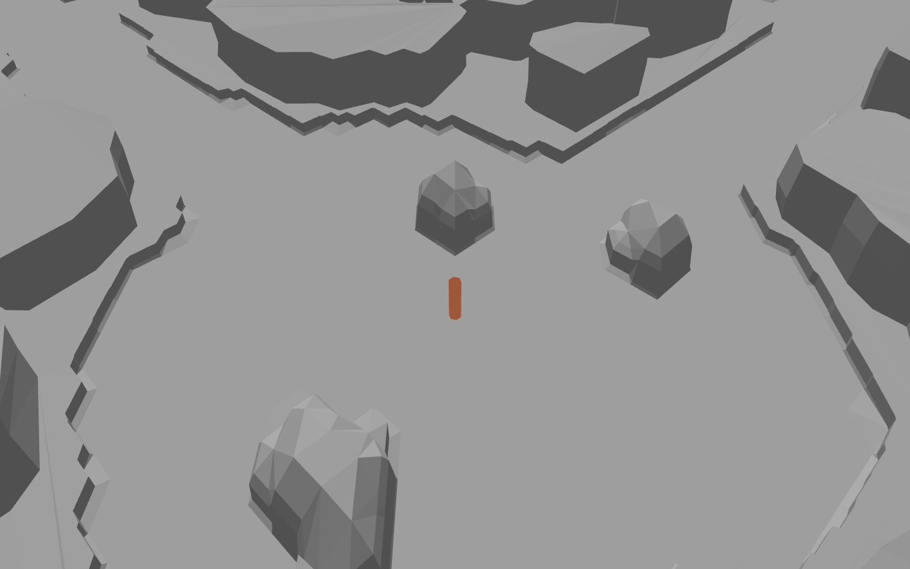
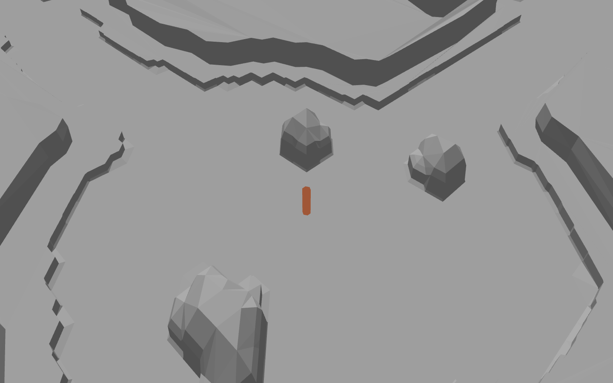
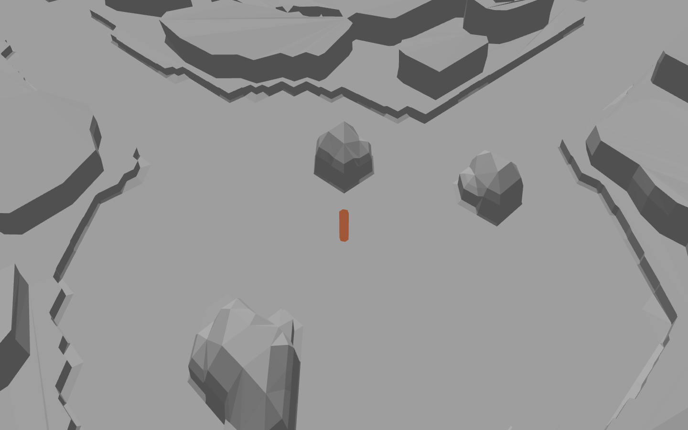
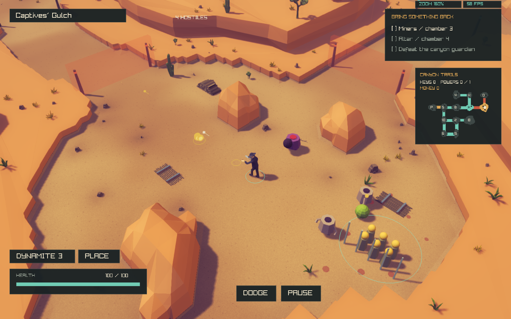
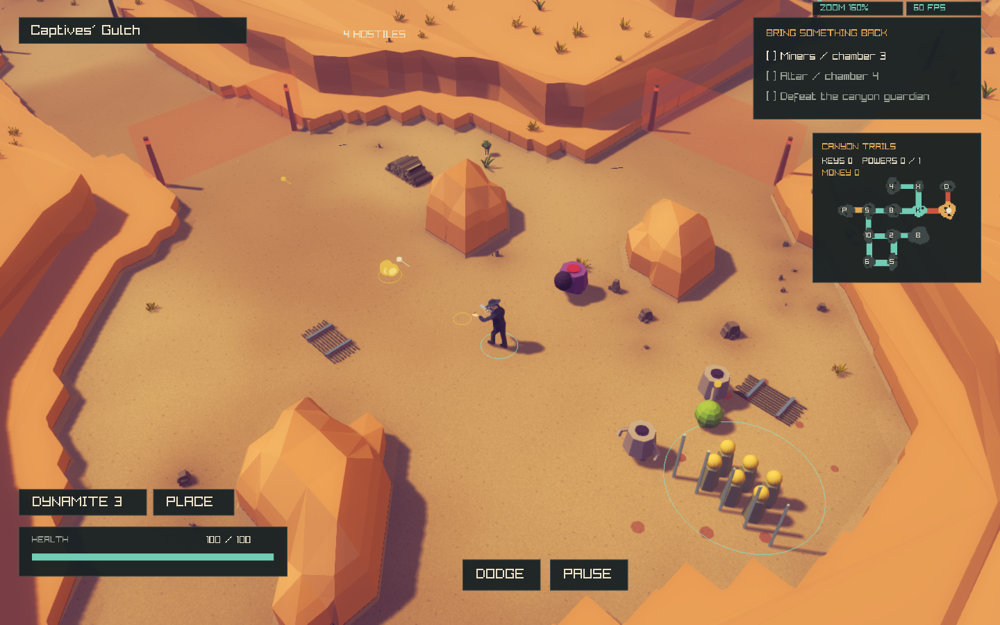
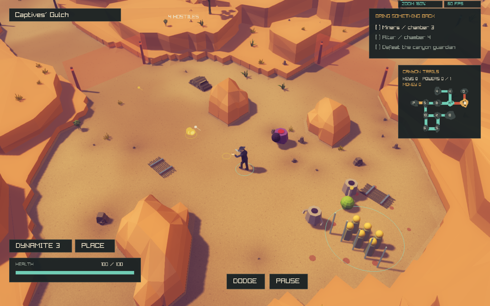

REJECTED AND REVERTED. The user judged this geometry significantly worse. The active game has been restored to the preceding canyon-composition pass. Captures and rejected source remain here only as historical evidence; diagnostic build commands below are archived and no longer registered. The low rim, broad flat tops and large masses failed the visual target. Reference fidelity remains unfinished.
DeathWard · Boundary geometry only · November 2026
Rock masses replace
the cell-extruded rim.
This is a geometry replacement, not another material or decoration pass. The principal cliff contours now form separate protrusions, recesses and local terraces. The low skirt still marks the fixed physical boundary. The images below expose that remaining limitation; native test passes do not certify an exact visual match.
Geometry-only render
A standalone diagnostic draws the actual generated triangles with neutral normal shading and a 1.8-metre scale marker. No vegetation, props, textures, UI, shadows or post-processing are drawn. This diagnostic shader is not used by the game. Camera is the production 160% zoom / 45° perspective setting and Works room position.

Diagnostic capture log
Authoritative target and current native game
The supplied target's room seed and exact camera pose are unknown. The native before/after uses the same seed, scene, frame count and unchanged camera. Images are unretouched game renders; no image-generation or paint-over is used.
Open combat room
A second room with localized formations
Matched native before / after
 Before this task · prior uncommitted pass.After · same scene and camera.
Before this task · prior uncommitted pass.After · same scene and camera.Exact causes and smallest architectural replacement
buildCanyon() in CanyonTerrain.cpp constructs the canonical solid height field from room basins, reserved passage paths and detached obstacles. It is unchanged. In buildCanyonAppearance(), the former clip, wall and cap lambdas extruded each source triangle separately. The first face inherited the floor boundary; higher masks were clipped on the same 1.25-metre lattice. Thus coherent noise still produced a cell-sized column pattern and terrace ribbons.
The replacement is rebuildCanyonCliffs() in CanyonCliffs.cpp. It retains the existing floor and detached boulders, replacing only boundary rock. The existing renderer and spatial bins are reused.
- Extract complete rings:
contours() clips the solid mask and cancels internal triangle edges. Shared boundary edges become closed polygon rings. - Create independent masses: irregularly spaced sites along the required boundary seat asymmetric, lobed rock masses in the existing non-playable space. They union with a recessed background plateau. Coherent variation operates at roughly 8- and 21-metre scales. The resulting principal contour no longer directly traces the room edge.
- Simplify real contours:
simplify() removes source-lattice subdivisions while retaining coherent bends. Faces use resulting contour corners, not uniform point spacing. - Make local terraces: independently gated elliptical/lobed geological patches intersect the rock region. They create isolated short upper formations rather than a second offset around every room.
- Construct caps and steep faces: polygon differences define exposed top surfaces; Earcut triangulates outer rings and holes. Cap subdivision preserves planar surfaces. Shared corner normals and staggered, signed mid-face relief form broad facets without cracks between faces or one consistent mid-height ridge.
- Preserve the physical footprint: a roughly 0.6–0.8-metre skirt meets the original boundary. All new mass footprints remain within its solid mask; a small inset keeps facet relief clear of the playable floor. Canonical terrain, collision, sockets and room graph are untouched.
- Reuse rendering/picking: triangles are assigned stable owner cells for rendering and indexed by their real bounds for visual height, ray and occlusion queries.
Clipper2 performs robust polygon unions/differences/intersections; Earcut handles caps with holes. Both are vendored and licensed under third_party/canyon/, so no system Boost or network dependency is added to normal builds. Source URLs and snapshot hashes are preserved in SOURCES.txt.
Visual corrections during this task
The first replacement left an excessively wide low shelf. A second version reduced the setback but still looked like one continuous scenic wall. The final version seats separate chunky masses along the boundary and keeps the continuous plateau farther back. Formation height was then increased relative to the player marker. Consistent outward mid-face relief was replaced with signed relief because it shaded as another horizontal stripe.
Main formations are approximately four metres high under the current configuration, with taller local patches and a 6.8-metre cap. The actual twelve-map median and maximum are recorded below. Their steep faces and horizontal tops remain distinct; the new geometry does not form broad diagonal ramps.
Validation
CPU checks cover twelve maps, all river categories, deterministic output, original terrain/navigation hashes, 180 sampled room collision/trace checks, cap/face area, supported roots, road clearance, budgets and rollback. GPU tests cover five seeds in both themes, native mesh/ray agreement, density stability and texture/material preservation. Occlusion tests exercise native transparency, enemy outlines and actual mouse firing at ordinary and rotated views. Four unchanged gameplay suites cover roads, rivers, generated floors and room graphs.
The density test now permits equal 100%/200% counts only when the configured hard instance budget was already full at 100%. Below the cap it still requires an increase; fixed props, monotonic subsets and exact restoration are still checked. No placement rule or budget was changed.
{
"maps": "12",
"categories": "4",
"asset_roles": "5",
"candidates": "25212",
"collision_room_checks": "180",
"original_highland_median": "7.55781",
"visual_highland_median": "4.08886",
"original_max": "10.7415",
"visual_max": "6.8",
"appearance_mean_ms": "295.108"
}Performance observation
Historical prior-pass stress log versus a fresh current 240-frame stress run. Same seed and workload; these are not ordinary gameplay frame rates or an isolated benchmark of geometry alone. Terrain-aware dressing may accept different candidates on the new mesh, so scenery counts can differ despite unchanged rules.
historical_before: 274613 terrain triangles, 105 chunks, 1068 scenery instances.
current: 82673 terrain triangles, 105 chunks, 1242 scenery instances.
Historical stress log · Current stress log · Measurements · Build
Scope, reproducibility and remaining differences
This task adds CanyonCliffs.*, its portable polygon dependencies and a standalone geometry diagnostic; it integrates the mesh in CanyonAppearance.cpp and adds CMake/test/report support. It does not edit combat, room graph, controls, camera, UI, lighting, materials, vegetation assets/densities or prop-placement rules. Earlier uncommitted changes from the preceding task remain separate.
cmake --build build --target deathward deathward_canyon_geometry_capture -j4
./build/deathward_canyon_geometry_capture docs/reports/canyon-contour-rebuild/geometry-only.png
./build/deathward --expedition --theme canyon --style original
# Existing original-terrain rollback remains available
DEATHWARD_CANYON_CONFIG=assets/visual/canyon-legacy.cfg ./build/deathward
- The low collision skirt still follows the immutable floor boundary; parts of that outline remain visible. Main cliff contours are independent, but this is not a claim that every visual trace of the old room outline has disappeared.
- Some faces remain more planar and angular than the target. The report does not certify exact visual equivalence.
- Detached room boulders were deliberately retained, so their regular lower footprints are outside this boundary-only correction.
- No decoration rules were changed. Existing terrain-aware support tests naturally resample candidate acceptance and root height against the new terrain; generated placements can therefore differ.
- The visual rock profile remains separate from canonical collision/projectile volumes. Those physical volumes are unchanged.
- Only native Linux was built and exercised. WASM checks remain waived.
The main architecture is no longer the blocker it was in the previous pass. Further boundary-only work should refine individual mass contours/facets against the reference, rather than add room-wide terrace bands. Completely hiding the low collision skirt while preserving its exact footprint remains a visual/readability trade-off, not something certified by the test suite.
Retained intermediate geometry
Discarded versions make the structural changes inspectable.

geometry-only-pass2 · intermediate, not final.
geometry-only-pass3 · intermediate, not final.
pass1-works · intermediate, not final.
pass2-works · intermediate, not final.
pass3-works · intermediate, not final.